32. 第 12 版的 HTML 模式
我们在第 12 版的开头提到，我们将分几个阶段开发该应用程序。我们写道：
- 基于 HTML 应用程序的视图，我们将定义 Web 应用程序必须实现的操作。此处我们将使用实际的视图，但这些视图也可以只是纸面上的草图；
- 基于这些操作，我们将定义 HTML 应用程序的服务 URL；
- 我们将使用一个提供 JSON 的服务器来实现这些服务 URL。这使我们能够定义 Web 服务器的框架，而无需担心要交付的 HTML 页面。我们将使用 Postman 测试这些服务 URL；
- 随后，我们将使用控制台客户端测试我们的 JSON 服务器；
- 一旦 JSON 服务器通过验证，我们将着手编写 HTML 应用程序；
我们已拥有可运行的 JSON 和 XML 服务器。现在可以转向 HTML 服务器。我们将看到，它复用了为 JSON/XML 服务器开发的完整架构，并在此基础上增加了 HTML 视图管理功能。
32.1. MVC 架构
我们将按以下方式实现 MVC（模型-视图-控制器）架构模式：
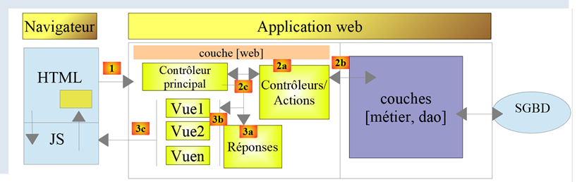
客户端请求的处理流程如下：
- 1 - 请求
请求的 URL 将采用 http://machine:port/action/param1/param2/… 的形式。[主控制器] 将通过配置文件将请求“路由”到正确的控制器。为此，它将使用 URL 中的 [action] 字段。URL 的其余部分 [param1/param2/…] 由可选参数组成，这些参数将传递给该操作。 此处 MVC 中的“C”指代 [主控制器、控制器 / 操作] 这一链条。如果没有任何控制器能处理该请求的操作，Web 服务器将返回“请求的 URL 不存在”的响应。
- 2 - 处理
- 选定的操作 [2a] 可以使用 [主控制器] 传递给它的参数。这些参数可能来自两个来源：
- URL 的路径 [/param1/param2/…]，
- 客户端请求主体中提交的参数；
- 在处理用户请求时，该操作可能需要调用 [业务] 层 [2b]。一旦客户端的请求被处理完毕，可能会触发各种响应。一个典型的例子是：
- 若请求无法正确处理，则返回错误响应；
- 否则返回确认响应；
- [控制器/操作] 将连同状态码一起将其响应 [2c] 返回给主控制器。这些状态码将唯一地表示应用程序的当前状态。它要么是成功码，要么是错误码；
- 3 - 响应
- 根据客户端请求的是 JSON、XML 还是 HTML 响应，[主控制器] 将实例化 [3a] 相应的响应类型，并指示其将响应发送给客户端。主控制器将同时向其传递响应以及由已执行的 [控制器/操作] 提供的状态码；
- 如果所需的响应为 JSON 或 XML 类型，选定的响应组件将对 [控制器/操作] 提供的响应进行格式化并发送 [3c]。能够处理此响应的客户端可以是 Python 控制台脚本，也可以是嵌入在 HTML 页面中的 JavaScript 脚本；
- 如果所需的响应是 HTML 类型，则选定的响应将根据收到的状态码选择 [3b] 其中一个 HTML 视图 [Vuei]。 这就是 MVC 中的 V。一个视图对应一个状态码。该视图 V 将显示已执行的 [控制器/操作] 返回的响应。它将该响应中的数据封装在 HTML、CSS 和 JavaScript 中。这些数据被称为视图模型。这就是 MVC 中的 M。客户端通常是浏览器；
32.2. HTML 服务器脚本的目录结构
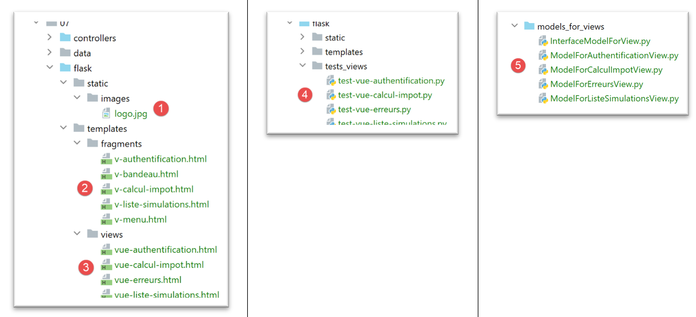
- 在 [1] 中，HTML 服务器的静态元素；
- 在 [2-3] 中，是 HTML 服务器的视图 V。片段 [2] 是视图 [3] 内的可复用元素；
- 在 [4] 中，用于静态测试视图的文件夹；
- 在 [5] 中，存放 V 视图的 M 模型的文件夹，即 MVC 中的 M；
32.3. 视图概述
该 HTML Web 应用程序使用四个视图。第一个视图是身份验证视图：
- 引导至该首个视图的操作是 [/init-session] 操作 [1]；

- 点击 [Validate] 按钮将触发 [/authenticate-user] 操作，并提交两个参数 [2-3]；
税费计算视图：

- 在 [1] 中，调用此视图的操作 [/authenticate-user]；
- 在 [2] 中，点击 [Validate] 按钮会触发 [/calculate-tax] 操作的执行，并提交三个参数 [2-5]；
- 点击链接 [6] 会触发不带参数的 [/list-simulations] 操作；
- 点击链接 [7] 将触发不带参数的 [/end-session] 操作；
第三个视图显示已认证用户执行的模拟：

- 在 [1] 中，调用此视图的操作 [/list-simulations]；
- 在 [2] 中，点击 [删除] 链接会触发带有一个参数的 [/delete-simulation] 操作，该参数为要从列表中删除的模拟编号；
- 点击 [3] 链接将触发不带参数的 [/display-tax-calculation] 操作，该操作将重新显示税费计算视图；
- 点击 [4] 链接将触发不带参数的 [/end-session] 操作；
第四个视图将称为“意外错误视图”：
- 在 [1] 中：用户自行输入了 URL。但在本例中，列表中不存在任何模拟。因此我们收到错误信息 [2]。我们对这条信息并不陌生，此前在 JSON/XML 中也出现过。我们将此类错误称为“意外错误”，因为它在应用程序的正常使用过程中不会发生，仅当用户自行输入 URL 时才会出现；

- 发生意外错误时，链接 [3-5] 可让您返回其他三个视图中的任意一个；
让我们回顾一下 JSON/XML 服务器的各种服务 URL：
操作 | 角色 | 执行上下文 |
/init-session | 用于设置所需响应的类型（json、xml、html） | GET 请求 可在任何时候发送 |
/authenticate-user | 授权或拒绝用户的登录 | POST 请求。 请求必须包含两个提交的参数 [user, password] 仅在已知会话类型（json、xml、html）时才能发出 |
/calculate-tax | 执行税费计算模拟 | POST 请求。 请求必须包含三个提交参数 [married, children, salary] 仅当会话类型（json、xml、html）已知且用户已通过身份验证时才能发出 |
/list-simulations | 请求查看自会话开始以来执行的模拟列表 | GET 请求。 只有在已知会话类型（json、xml、html）且用户已通过身份验证的情况下，才能发出此请求 |
/delete-simulation/number | 从模拟列表中删除一个模拟 | GET 请求。 只有在已知会话类型（json、xml、html）且用户已通过身份验证的情况下，才能发出此请求 |
/display-tax-calculation | 显示税费计算的 HTML 页面 | GET 请求。 只有在已知会话类型（json、xml、html）且用户已通过身份验证的情况下才能发出 |
/end-session | 结束模拟会话。 | 从技术上讲，旧的 Web 会话将被删除，并创建一个新的会话 仅当已知会话类型（json、xml、html）且用户已通过身份验证时，才可签发 |
这些不同的服务 URL 也将用于 HTML 服务器。
32.4. 配置视图
一个操作由控制器处理。该控制器返回一个元组 (result, status_code)，其中：
- [result] 是一个键值为 [action, status, response] 的字典；
- [status_code] 是将发送给客户端的 HTTP 响应的状态码；
在 HTML 会话中，执行操作后显示的页面取决于控制器返回的状态码。这种依赖关系在 [config] 配置中体现如下：
# les vues HTML et leurs modèles dépendent de l'état rendu par le contrôleur
"views": [
{
# vue d'authentification
"états": [
# /init-session réussite
700,
# /authentifier-utilisateur échec
201
],
"view_name": "views/vue-authentification.html",
"model_for_view": ModelForAuthentificationView()
},
{
# vue du calcul de l'impôt
"états": [
# /authentifier-utilisateur réussite
200,
# /calculer-impot réussite
300,
# /calculer-impot échec
301,
# /afficher-calcul-impot
800
],
"view_name": "views/vue-calcul-impot.html",
"model_for_view": ModelForCalculImpotView()
},
{
# vue de la liste des simulations
"états": [
# /lister-simulations
500,
# /supprimer-simulation
600
],
"view_name": "views/vue-liste-simulations.html",
"model_for_view": ModelForListeSimulationsView()
}
],
# vue des erreurs inattendues
"view-erreurs": {
"view_name": "views/vue-erreurs.html",
"model_for_view": ModelForErreursView()
},
# redirections
"redirections": [
{
"états": [
400, # /fin-session réussite
],
# redirection vers
"to": "/init-session/html",
}
],
}
- 第 2–40 行：[views] 是一个视图列表。让我们来看一下第 3–13 行中的视图：
- 第 11 行：显示的视图 V；
- 第 12 行：负责为该视图生成模型 M 的类实例；
- 第 5–10 行：导致此视图的状态；
- 第 3–13 行：身份验证视图；
- 第 14–28 行：税费计算视图；
- 第 29–39 行：模拟列表视图；
- 第 42–46 行：意外错误视图；
- 第 49–57 行：某些状态会通过重定向跳转到某个视图。状态 400 即属于这种情况，它对应于成功的 [/fin-session] 操作。此时，客户端必须被重定向到 [http://machine:port/chemin/init-session/html] 操作；
接下来我们将介绍不同的视图。
32.5. 身份验证视图
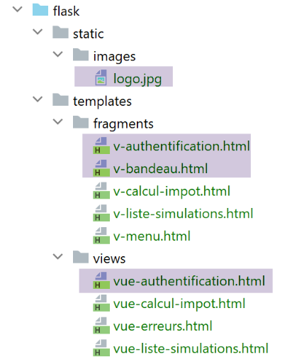
32.5.1. 视图概述
身份验证视图如下所示：

该视图由两个元素组成，我们将它们称为片段：
- 片段 [1] 由片段 [v-banner.html] 生成；
- 片段 [2] 由片段 [v-authentication.html] 生成；
身份验证视图由以下页面 [vue-authentication.html] 生成：
<!-- document HTML -->
<!doctype html>
<html lang="fr">
<head>
<!-- Required meta tags -->
<meta charset="utf-8">
<meta name="viewport" content="width=device-width, initial-scale=1, shrink-to-fit=no">
<!-- Bootstrap CSS -->
<link rel="stylesheet" href="https://maxcdn.bootstrapcdn.com/bootstrap/4.4.1/css/bootstrap.min.css">
<title>Application impôts</title>
</head>
<body>
<div class="container">
<!-- headband -->
{% include "fragments/v-bandeau.html" %}
<!-- two-column line -->
<div class="row">
<div class="col-md-9">
{% include "fragments/v-authentification.html" %}
</div>
</div>
<!-- if error - displays an error alert -->
{% if modèle.error %}
<div class="row">
<div class="col-md-9">
<div class="alert alert-danger" role="alert">
Les erreurs suivantes se sont produites :
<ul>{{modèle.erreurs|safe}}</ul>
</div>
</div>
</div>
{% endif %}
</div>
</body>
</html>
评论
- 第 2 行：HTML 文档以此行开头；
- 第 3–36 行：HTML 页面由 <html> 和 </html> 标签包围；
- 第 4–11 行：HTML 文档的头部（head）；
- 第 6 行：此处的 <meta charset> 标签表明该文档采用 UTF-8 编码；
- 第 7 行：<meta name='viewport'> 标签设置初始视口显示方式：以初始大小（initial-scale）显示在屏幕的整个宽度（width）上，而不缩放以适应较小的屏幕（shrink-to-fit）；
- 第 9 行：<link rel='stylesheet'> 标签指定了控制视口外观的 CSS 文件。这里我们使用的是 Bootstrap 4.4.1 CSS 框架 [https://getbootstrap.com/docs/4.0/getting-started/introduction/] ;
- 第 10 行：title 标签设置页面标题：

- 第 13–35 行：网页的主体内容被 body 和 /body 标签所包围；
- 第 14–34 行：<div> 标签界定了页面显示区域。视图中使用的 [class] 属性均指向 Bootstrap CSS 框架。<div class=’container’> 标签（第 14 行）界定了一个 Bootstrap 容器；
- 第 26 行：引入了片段 [v-banner.html]。该片段生成页面的横幅 [1]。我们稍后将对此进行说明；
- 第 18–22 行：<div class=’row’> 标签定义了一个 Bootstrap 行。这些行由 12 个列组成；
- 第 19 行：该标签定义了一个 9 列的区域；
- 第 20 行：我们引入片段 [v-authentification.html]，该片段显示页面的身份验证表单 [2]。稍后我们将对此进行说明；
- 第 24–33 行：这些行的 HTML 代码仅在 [model.error] 为 True 时才会被使用。我们将始终采用这种方式：HTML 视图的模型将被封装在一个字典 [model] 中；
- 第 24–33 行：若用户输入的凭据不正确，认证将失败。此时，认证视图将重新显示并附带一条错误信息。属性 [model.error] 用于指示是否显示该错误信息；
- 第 27–30 行：定义一个粉色背景的区域（class="alert alert-danger"）（第 27 行）；

- 第 28 行：部分文本；
- 第 29 行：HTML 标签 <ul>（无序列表）用于显示带项目符号的列表。 每个列表项必须采用 <li>item</li> 的语法。此处，我们显示 [model.errors] 的值。该值由 [safe] 过滤器进行过滤（检查是否包含 |）。默认情况下，当字符串发送至浏览器时，Flask 会“转义”其中可能包含的任何 HTML 标签，以防止浏览器将其解释为有效标签。 但有时我们需要让它们被解释。本例即属此情况，字符串 [model.errors] 中包含用于分隔列表项的 HTML 标签 <li> 和 </li>。此时，我们使用 [safe] 过滤器，它会告知 Flask 待显示的字符串是安全的，因此不应对其中的任何 HTML 标签进行清理；
让我们注意一下此代码中需要定义的动态元素：
- [model.error]：用于显示错误消息；
- [model.errors]：错误消息的列表（HTML 意义上的列表）；
32.5.2. [v-banner.html] 片段
[v-banner.html] 片段用于显示 Web 应用程序中所有视图的顶部横幅：

[v-banner.html] 片段的代码如下：
<!-- Bootstrap Jumbotron -->
<div class="jumbotron">
<div class="row">
<div class="col-md-4">
<img src="{{ url_for('static', filename='images/logo.jpg') }}" alt="Cerisier en fleurs"/>
</div>
<div class="col-md-8">
<h1>
Calculez votre impôt
</h1>
</div>
</div>
</div>
评论
- 第 2–13 行：横幅被包裹在一个 Bootstrap Jumbotron 区域 [<div class="jumbotron">] 中。该 Bootstrap 类会以特定方式对显示内容进行样式设置，使其脱颖而出；
- 第 3–12 行：一个 Bootstrap 行；
- 第 4–6 行：在该行的前四列中放置了一张图片 [img]；
- 第 5 行：语法：
使用了 Flask 的 [url_for] 函数。此处的参数值是 [static] 文件夹中 [images/logo.jpg] 文件的 URL；
- 第 7–11 行：该行其余 8 列（请记住总共有 12 列）将用于显示文本（第 9 行），并采用大字号（<h1>，第 8–10 行）；
32.5.3. [v-authentification.html] 片段
[v-authentification.html] 片段用于显示 Web 应用程序的身份验证表单：

[v-authentification.html] 片段的代码如下：
<!-- form HTML - post its values with the [authenticate-user] action -->
<form method="post" action="/authentifier-utilisateur">
<!-- title -->
<div class="alert alert-primary" role="alert">
<h4>Veuillez vous authentifier</h4>
</div>
<!-- bootstrap form -->
<fieldset class="form-group">
<!-- 1st line -->
<div class="form-group row">
<!-- wording -->
<label for="user" class="col-md-3 col-form-label">Nom d'utilisateur</label>
<div class="col-md-4">
<!-- text input field -->
<input type="text" class="form-control" id="user" name="user"
placeholder="Nom d'utilisateur" value="{{ modèle.login }}" required>
</div>
</div>
<!-- 2nd line -->
<div class="form-group row">
<!-- wording -->
<label for="password" class="col-md-3 col-form-label">Mot de passe</label>
<!-- text input field -->
<div class="col-md-4">
<input type="password" class="form-control" id="password" name="password"
placeholder="Mot de passe" required>
</div>
</div>
<!-- submit] button on a 3rd line -->
<div class="form-group row">
<div class="col-md-2">
<button type="submit" class="btn btn-primary">Valider</button>
</div>
</div>
</fieldset>
</form>
评论
- 第 2–39 行：<form> 标签定义了一个 HTML 表单。该表单通常具有以下特征：
- 它定义了输入字段（第 17 行和第 27 行的 <input> 标签）；
- 它有一个 [submit] 按钮（第 34 行），用于将输入的值发送至 [form] 标签（第 2 行）中 [action] 属性指定的 URL。请求该 URL 所使用的 HTTP 方法在 [form] 标签（第 2 行）的 [method] 属性中指定；
- 在此，当用户点击 [Submit] 按钮（第 34 行）时，浏览器将使用 POST 方法（第 2 行）将表单中输入的值提交至 URL [/authenticate-user]（第 2 行）；
- POST 数据即用户在第 17 行和第 27 行输入框中输入的值。这些值将以 [x-www-form-urlencoded] 格式包含在浏览器发送的 HTTP 请求正文中。参数名称 [user, password] 对应于第 17 行和第 27 行输入框的 [name] 属性；
- 第 5–7 行：一个 Bootstrap 部分，用于在蓝色背景上显示标题：
- 第 10–37 行：一个 Bootstrap 表单。所有表单元素随后将采用特定样式；

- 第 12–20 行：定义表单的第一行 Bootstrap 布局：

- 第 14 行将标签 [1] 设置为三列布局。[label] 标签的 [for] 属性将该标签与第 17 行输入字段的 [id] 属性建立关联；
- 第 15–19 行：将输入字段放置在四列布局中；
- 第 17–18 行：HTML [input] 标签定义了一个输入框。它具有以下属性：
- [type='text']：这是一个文本输入框。您可以在其中输入任何内容；
- [class='form-control']：输入字段的 Bootstrap 样式；
- [id='user']: 输入字段的标识符。该标识符通常由 CSS 和 JavaScript 代码使用；
- [name='user']: 输入字段的名称。用户输入的值将由浏览器以该名称提交 [user=xx]；
- [placeholder='prompt']: 用户尚未输入任何内容时，输入框中显示的提示文本；
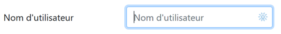
- （待续）
- [value='value']: 输入框一出现时，即会显示文本 'value'，此时用户尚未输入任何内容。此机制通常用于在发生错误时显示导致错误的输入内容。在此处，该值将取自变量 [model.login]；
- [required]：要求用户输入值，以便表单能提交至服务器：
- 第 21–30 行：针对密码输入字段的类似代码；
- 第 27 行：[type='password'] 创建了一个文本输入框（可输入任意内容），但输入的字符会被隐藏：

- 第 32–36 行：用于 [Submit] 按钮的第三行 Bootstrap 代码；
- 第 34 行：由于该按钮具有 [type="submit"] 属性，点击此按钮会触发浏览器将输入的值发送至服务器，如前所述。CSS 属性 [class="btn btn-primary"] 会显示一个蓝色按钮：

还有最后一点需要说明。在第 2 行中，[action="/authentifier-utilisateur"] 属性定义了一个不完整的 URL（它没有以 http://machine:port/chemin 开头）。 在本示例中，所有应用程序 URL 均采用 [http://machine:port/chemin/action/param1/param2/..] 的形式，其中 [http://machine:port/chemin] 是服务 URL 的根目录。在 [action="/authenticate-user"] 中，我们使用的是绝对 URL，即从 URL 根目录开始计算的 URL。 因此，POST 请求的完整 URL 为 [http://machine:port/chemin/authentifier-utilisateur]，这也是浏览器将使用的 URL。
请注意，此片段使用了 [model.login] 模板。
32.5.4. 视觉测试
在将视图集成到应用程序之前，我们可以对其进行充分测试。此处的目的是测试其视觉外观。我们将把所有测试视图收集在项目的 [tests_views] 文件夹中：

要测试视图 V [vue-authentification.html]，我们需要创建它将要显示的数据模型 M。我们通过脚本 [test_vue_authentification.py] 来实现这一点：
注释
- 第 1-3 行：我们创建了一个 Flask 应用程序，其唯一目的是显示 [authentication-view.html] 视图（第 22 行）；
- 第 7 行：该应用程序仅有一个服务 URL；
- 第 9–20 行：身份验证视图包含由 [model] 对象控制的动态部分。该对象被称为视图模型。根据 MVC 缩写词的两种定义之一，这里对应 MVC 中的 M（模型）。在定义 [authentication-view.html] 视图时，我们确定了三个动态值：
- [model.error]：一个布尔值，用于指示是否显示错误消息；
- [model.errors]：一个包含错误消息的 HTML 列表；
- [model.login]：用户的登录名；
因此，我们需要定义这三个动态值。
- 第 9–20 行：我们定义了身份验证视图的三个动态元素；
要运行测试，我们启动脚本 [tests_views/test_vue_authentification.py] 并请求 URL [/localhost:5000/]：
我们将持续进行这些视觉测试，直到对结果满意为止。

32.5.5. 计算视图模型
一旦确定了视图的外观，我们就可以在实际条件下计算视图模型。视图模型将由位于 [models_for_views] 文件夹中的类生成：

每个生成视图模型的类都将实现以下 [InterfaceModelForView] 接口：
from abc import ABC, abstractmethod
from flask import Request
from werkzeug.local import LocalProxy
class InterfaceModelForView(ABC):
@abstractmethod
def get_model_for_view(self, request: Request, session: LocalProxy, config: dict, résultat: dict) -> dict:
pass
- 第 8–10 行：[get_model_for_view] 方法负责生成一个封装在字典中的视图模型。为此，它接收以下信息：
- [request, session, config] 是操作控制器使用的相同参数。因此，它们也会传递给模型；
- 控制器已生成一个结果 [result]，该结果也会传递给模型。该结果包含一个重要元素 [status]，用于指示当前操作的执行情况。模型将使用此信息；
我们已经看到，在应用程序的配置 [config] 中，控制器返回的状态码被用于指定要显示的 HTML 视图：
# les vues HTML et leurs modèles dépendent de l'état rendu par le contrôleur
"views": [
{
# vue d'authentification
"états": [
# /init-session réussite
700,
# /authentifier-utilisateur échec
201
],
"view_name": "views/vue-authentification.html",
"model_for_view": ModelForAuthentificationView()
},
{
# vue du calcul de l'impôt
"états": [
# /authentifier-utilisateur réussite
200,
# /calculer-impot réussite
300,
# /calculer-impot échec
301,
# /afficher-calcul-impot
800
],
"view_name": "views/vue-calcul-impot.html",
"model_for_view": ModelForCalculImpotView()
},
{
# vue de la liste des simulations
"états": [
# /lister-simulations
500,
# /supprimer-simulation
600
],
"view_name": "views/vue-liste-simulations.html",
"model_for_view": ModelForListeSimulationsView()
}
],
# vue des erreurs inattendues
"view-erreurs": {
"view_name": "views/vue-erreurs.html",
"model_for_view": ModelForErreursView()
},
# redirections
"redirections": [
{
"états": [
400, # /fin-session réussite
],
# redirection vers
"to": "/init-session/html",
}
],
}
因此，正是状态码 [700, 201]（第 7 行和第 9 行）导致了身份验证页面的显示。要理解这些代码的含义，我们可以参考在 JSON 应用程序上进行的 [Postman] 测试：
- [init-session-json-700]：700是[init-session]操作成功后的状态码：随后会显示空白的身份验证表单；
- [authenticate-user-201]：201是[authenticate-user]操作失败（凭据不正确）后的状态码：此时会显示身份验证表单，以便用户修正凭据；
既然我们已知认证表单应在何时显示，即可在 [ModelForAuthentificationView]（第 12 行）中定义其模型：
注释
- 第 8 行：身份验证视图的 [get_model_for_view] 方法必须返回一个包含三个键 [error, errors, login] 的字典。该计算基于操作控制器返回的状态码；
- 第 12 行：我们获取处理当前操作的控制器返回的状态码；
- 第 14–29 行：模型取决于此状态码；
- 第 15–18 行：需要显示空白认证表单的情况；
- 第 20–29 行：认证失败的情况：我们显示用户输入的用户名并显示一条错误消息。用户随后可以尝试再次认证；
- 第 22 行：可从客户端请求中获取用户最初输入的用户名；
- 第 24 行：表明有错误需要显示；
- 第 26–29 行：若发生错误，result[‘response’] 将包含一个错误列表；
32.5.6. 生成 HTML 响应
让我们回到 HTML 应用程序的 MVC 模型：
- 在步骤 2（2a、2b）：控制器执行一个操作；
- 在 3（3a、3b、3c）：选择一个视图并将其发送给客户端；
在 [3a] 中，会选择响应类型（JSON、XML、HTML）。我们已经了解过如何生成 JSON 和 XML 响应，但尚未涉及 HTML 响应。这些响应由 [HtmlResponse] 类生成：

让我们回顾一下，在主脚本 [main] 中是如何确定要发送给用户的响应类型的：
….
# on construit la réponse à envoyer
response_builder = config["responses"][type_response]
response, status_code = response_builder \
.build_http_response(request, session, config, status_code, résultat)
# on envoie la réponse
return response, status_code
其中，第 3 行中的 config['responses'] 是以下字典：
# les différents types de réponse (json, xml, html)
"responses": {
"json": JsonResponse(),
"html": HtmlResponse(),
"xml": XmlResponse()
},
因此，生成 HTML 响应的是 [HtmlResponse] 类。其代码如下：
- 第 11 行：负责生成 HTML 响应的 [build_http_response] 方法接收以下参数：
- [request, session, dict]：这些是控制器用于处理当前操作的参数；
- [status_code, result] 是该控制器生成的两个结果；
- 第 14 行：如前所述，服务器的 HTML 响应取决于 [result] 字典中包含的状态码；
- 第 16–22 行：首先处理重定向。目前我们暂且忽略这一部分，直到遇到重定向的示例。请注意，重定向通常是 HTML 服务器的典型用例。JSON 或 XML 服务器中不会出现这种情况；
- 第 24–41 行：我们在视图中搜索其 [states] 列表中包含所需状态的视图；
- 第 42–46 行：若未找到视图，则视为意外错误。让我们看一个示例。在应用程序的正常运行中，[/delete-simulation] 操作绝不会失败。事实上，我们将看到，模拟的删除是通过代码生成的链接来执行的。这些链接是有效的，不会引发错误。 然而，正如我们所见，用户可以直接输入 URL [/delete-simulation/id]，从而触发错误。在此情况下，[SupprimerSimulationController] 会返回状态码 601。但该状态码并不在触发 HTML 页面显示的状态码列表中。因此，将显示错误视图。其在配置中定义如下：
# vue des erreurs inattendues
"view-erreurs": {
"view_name": "views/vue-erreurs.html",
"model_for_view": ModelForErreursView()
},
- 第 49 行：一旦确定要显示的视图，我们就获取生成其模板的类。该类同样位于 [config] 配置中；
- 第 50 行：找到该类后，生成视图的模型；
- 第 52 行：一旦视图 V 的模型 M 计算完成，我们就可以生成该视图的 HTML 代码；
- 第 54–55 行：我们构建包含 HTML 正文的 HTTP 响应；
- 第 56–57 行：返回包含状态码的 HTTP 响应；
32.5.7. 测试 [Postman]
我们将执行返回代码 [700, 201] 的请求，这些请求会显示身份验证页面：
- [init-session-html-700]：700 是 [init-session] 操作成功后的状态码；随后将显示空的身份验证表单；
- [authenticate-user-201]：201 是 [authenticate-user] 操作失败（凭据不正确）后的状态码；随后将显示身份验证表单以便进行修正；
只需复用这些视图，并检查它们是否正确显示了身份验证视图。以下是两个示例：
案例 1：[init-session-html-700]，HTML 会话的开始；

响应如下：
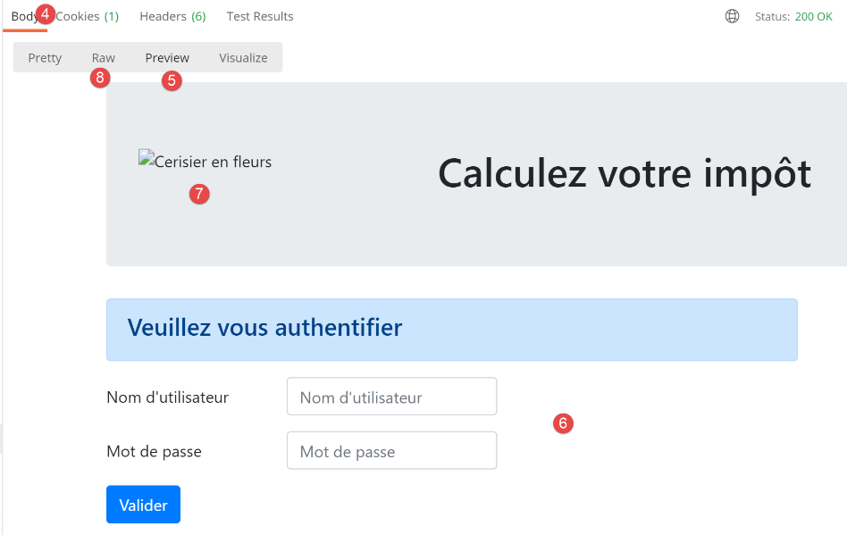
- 在 [5] 中，[预览] 模式允许您查看收到的 HTML 页面；
- 在 [6] 中，我们可以看到预期的空表单；
- 在 [7] 中，Postman 未点击页面图片的链接；
- 在 [8] 中，[Raw] 模式提供了对接收到的 HTML 的访问；

- 在 [3] 中，是 Postman 未能加载的链接。它显示了 [alt=alternative] 属性的值，该值会在图片无法加载时显示。这里的情况更像是 Postman 故意不加载它。您可以在 上通过 Postman 请求 URL [http://localhost:5000/static/images.logo.jpg] 来验证这一点：
情况 2：[user-authentication-201]，身份验证错误

现在，让我们在成功初始化 HTML 会话后执行一次错误的身份验证：

上文：
- 在 [4,7] 处：请求发送字符串 [user=bernard&password=thibault]；
响应如下：

- 在 [4] 处，显示了一条错误信息；
- 在 [3] 处，再次显示了错误的用户；
32.5.8. 结论
我们在未编写其他视图的情况下成功测试了视图 [vue-authentification.html]。这是因为：
- 所有控制器均已编写完成；
- [Postman] 允许我们在无需所有视图的情况下向服务器发送请求。编写控制器时，必须做好处理任何视图都无法处理的请求的准备。切勿预先断定“此请求不可能发生”，必须进行验证；
32.6. 税费计算视图

32.6.1. 视图概述
税费计算视图如下：

该视图由三部分组成：
- 1：顶部横幅由之前介绍过的片段 [v-bandeau.html] 生成；
- 2：由片段 [v-calcul-impot.html] 生成的税费计算表单；
- 3：由片段 [v-menu.html] 生成的包含两个链接的菜单；
税费计算视图由以下代码 [vue-calcul-impot.html] 生成：
<!-- document HTML -->
<!doctype html>
<html lang="fr">
<head>
<!-- Required meta tags -->
<meta charset="utf-8">
<meta name="viewport" content="width=device-width, initial-scale=1, shrink-to-fit=no">
<!-- Bootstrap CSS -->
<link rel="stylesheet" href="https://maxcdn.bootstrapcdn.com/bootstrap/4.4.1/css/bootstrap.min.css">
<title>Application impôts</title>
</head>
<body>
<div class="container">
<!-- headband -->
{% include "fragments/v-bandeau.html" %}
<!-- two-column line -->
<div class="row">
<!-- the menu -->
<div class="col-md-3">
{% include "fragments/v-menu.html" %}
</div>
<!-- calculation form -->
<div class="col-md-9">
{% include "fragments/v-calcul-impot.html" %}
</div>
</div>
<!-- success stories -->
{% if modèle.success %}
<!-- a success alert is displayed -->
<div class="row">
<div class="col-md-3">
</div>
<div class="col-md-9">
<div class="alert alert-success" role="alert">
{{modèle.impôt}}</br>
{{modèle.décôte}}</br>
{{modèle.réduction}}</br>
{{modèle.surcôte}}</br>
{{modèle.taux}}</br>
</div>
</div>
</div>
{% endif %}
{% if modèle.error %}
<!-- 9-column error list -->
<div class="row">
<div class="col-md-3">
</div>
<div class="col-md-9">
<div class="alert alert-danger" role="alert">
Les erreurs suivantes se sont produites :
<ul>{{modèle.erreurs | safe}}</ul>
</div>
</div>
</div>
{% endif %}
</div>
</body>
</html>
评论
- 我们仅将尚未遇到的新功能注释掉；
- 第 16 行：将视图的顶部横幅包含在视图的第一行 Bootstrap 行中；
- 第 21 行：包含菜单，该菜单将占据视图第二行 Bootstrap 布局中的三列（第 18、20 行）；
- 第 25 行：包含税费计算表单，该表单将占据视图第二行 Bootstrap 布局中的九列（第 24 行）（第 18 行）；
- 第 30–46 行：如果税费计算成功 [model.success=True]，则将税费计算结果显示在绿色框中（第 37–43 行）。 该框位于视图的第三行 Bootstrap 行（第 32 行），占据九列（第 36 行），位于三列空白区域（第 33–35 行）的右侧。因此，该框将位于税费计算表下方；
- 第 48–61 行：如果税费计算失败 [model.error=True]，则在粉色容器中显示错误信息（第 55–58 行）。 该框架位于视图的第三行 Bootstrap 区域（第 50 行），占据九个列（第 54 行），位于三个空列（第 51–53 行）的右侧。因此，该框架也将位于税费计算表单下方；
32.6.2. 片段 [v-calcul-impot.html]
片段 [v-calcul-impot.html] 显示了 Web 应用程序的税费计算表单：
[v-calcul-impot.html] 片段的代码如下：

<!-- form HTML posted -->
<form method="post" action="/calculer-impot">
<!-- 12-column message on blue background -->
<div class="col-md-12">
<div class="alert alert-primary" role="alert">
<h4>Remplissez le formulaire ci-dessous puis validez-le</h4>
</div>
</div>
<!-- form elements -->
<fieldset class="form-group">
<!-- first row of 9 columns -->
<div class="row">
<!-- 4-column wording -->
<legend class="col-form-label col-md-4 pt-0">Etes-vous marié(e) ou pacsé(e)?</legend>
<!-- 5-column radio buttons-->
<div class="col-md-5">
<div class="form-check">
<input class="form-check-input" type="radio" name="marié" id="gridRadios1" value="oui" {{modèle.checkedOui}}>
<label class="form-check-label" for="gridRadios1">
Oui
</label>
</div>
<div class="form-check">
<input class="form-check-input" type="radio" name="marié" id="gridRadios2" value="non" {{modèle.checkedNon}}>
<label class="form-check-label" for="gridRadios2">
Non
</label>
</div>
</div>
</div>
<!-- second row of 9 columns -->
<div class="form-group row">
<!-- 4-column wording -->
<label for="enfants" class="col-md-4 col-form-label">Nombre d'enfants à charge</label>
<!-- 5-column numerical entry field for number of children -->
<div class="col-md-5">
<input type="number" min="0" step="1" class="form-control" id="enfants" name="enfants" placeholder="Nombre d'enfants à charge" value="{{modèle.enfants}}" required>
</div>
</div>
<!-- third row of 9 columns -->
<div class="form-group row">
<!-- 4-column wording -->
<label for="salaire" class="col-md-4 col-form-label">Salaire annuel net imposable</label>
<!-- 5-column numeric input field for wages -->
<div class="col-md-5">
<input type="number" min="0" step="1" class="form-control" id="salaire" name="salaire" placeholder="Salaire annuel net imposable" aria-describedby="salaireHelp" value="{{modèle.salaire}}" required>
<small id="salaireHelp" class="form-text text-muted">Arrondissez à l'euro inférieur</small>
</div>
</div>
<!-- fourth row, [submit] button on 5 columns -->
<div class="form-group row">
<div class="col-md-5">
<button type="submit" class="btn btn-primary">Valider</button>
</div>
</div>
</fieldset>
</form>
评论
- 第 2 行：该 HTML 表单将通过 [/calculer-impot] 网址（action 属性）提交（method 属性）。提交的值将是输入字段的值：
- 表单中选中单选按钮的值：
- 若选中 [Yes] 单选按钮，则 [married=yes]（第 17–22 行）。其中 [married] 是第 18 行 [name] 属性的值，[yes] 是第 18 行 [value] 属性的值；
- 若选中 [No] 单选按钮，则为 [married=no]（第 23–28 行）。其中 [married] 是第 24 行 [name] 属性的值，[no] 是第 24 行 [value] 属性的值；
- 表单第37行数字输入字段的值，形式为 [children=xx]，其中 [children] 是第37行 [name] 属性的值，[xx] 是用户通过键盘输入的值；
- 第46行数字输入字段的值，形式为 [salary=xx]，其中 [salary] 是第46行 [name] 属性的值，[xx] 是用户通过键盘输入的值；
最后，提交的值将呈现为 [married=xx&children=yy&salary=zz] 的形式。
- （待续）
- 当用户点击第53行的[submit]按钮时，输入的值将被提交；
- 第16–30行：两个单选按钮：

这两个单选按钮属于同一个单选按钮组，因为它们具有相同的 [name] 属性（第 18、24 行）。浏览器确保在单选按钮组内，任何时候都只能选中一个。因此，点击其中一个会取消之前选中的那个；
- 这些是单选按钮，是因为它们具有 [type="radio"] 属性（第 18、24 行）；
- 当表单显示时（在输入数据之前），必须选中其中一个单选按钮：要实现这一点，只需在相应的 <input type="radio"> 标签中添加 [checked='checked'] 属性。这可以通过动态变量来实现：
- 第 18 行中的 [model.checkedYes]；
- 第 24 行的 [model->checkedNo]；
这些变量将成为视图模板的一部分。
- 第 37 行：一个数值输入字段 [type="number"]，最小值为 0 [min="0"]。在现代浏览器中，这意味着用户只能输入 >=0 的数字。在这些现代浏览器中，可以通过点击上下滑块进行输入。 第 37 行中的 [step="1"] 属性表示滑块将以 1 为增量进行操作。因此，滑块仅接受从 0 到 n 之间以 1 为步长的整数值。对于手动输入，这意味着不接受带小数的数字；
- 第 37 行：在某些视图中，children 输入字段必须预先填入该字段的上次输入内容。为此，我们使用 [value] 属性，该属性用于设置输入字段中显示的值。该值将是动态的，由 [model.children] 变量生成；

- 第 37 行：[required] 属性强制用户输入数据，以便表单通过验证；
- 第 46 行：薪资字段的说明与子女字段相同；
- 第 53 行：[submit] 按钮会触发将输入的值通过 POST 请求发送至 URL [/calculer-impot]（第 2 行）；

32.6.3. [v-menu.html] 片段
此片段会在税费计算表的左侧显示一个菜单：

该片段的代码如下：
<!-- bootstrap menu -->
<nav class="nav flex-column">
<!-- display a list of links HTML -->
{% for optionMenu in modèle.optionsMenu %}
<a class="nav-link" href="{{optionMenu.url}}">{{optionMenu.text}}</a>
{% endfor %}
</nav>
评论
- 第2–7行：HTML标签 [nav] 包裹着HTML文档中包含指向其他文档的导航链接的部分；
- 第 5 行：HTML 标签 [a] 引入了一个导航链接：
- [optionMenu.url]：是用户点击 [optionMenu.text] 链接时被引导到的 URL。随后浏览器将执行 [GET optionMenu.url] 操作。[optionMenu.url] 将是一个相对于应用程序根目录 [http://machine:port/path] 的绝对 URL。因此，在 [1] 中，我们将创建如下链接：
- 第 5 行：片段的 [modèle.optionsMenu] 模板将是一个列表，格式如下：
- 第 2、7 行：CSS 类 [nav, flex-column, nav-link] 是 Bootstrap 类，用于定义菜单的外观；
32.6.4. 视觉测试
我们将这些各种元素收集在 [Tests] 文件夹中，并为视图 [vue-calcul-impot.html] 创建一个测试模板：

测试脚本 [test_vue_calcul_impot] 如下所示：
注释
- 第 9–34 行：初始化视图 [vue-calcul-impot.html] 中的所有动态部分，以及片段 [v-calcul-impot.html] 和 [v-menu.html]；
- 第 36 行：显示视图 [vue-calcul-impot.html]；
运行测试脚本 [test_vue_calcul_impot] 时，我们将得到以下结果：
我们对该视图进行调整，直到对视觉效果满意为止。随后，我们可以将该视图集成到当前正在开发的 Web 应用程序中。

32.6.5. 计算视图模型
一旦确定了视图的外观，我们就可以在实际条件下计算视图模型。让我们回顾一下导致此视图的状态代码。这些代码可以在配置文件中找到：
{
# vue du calcul de l'impôt
"états": [
# /authentifier-utilisateur réussite
200,
# /calculer-impot réussite
300,
# /calculer-impot échec
301,
# /afficher-calcul-impot
800
],
"view_name": "views/vue-calcul-impot.html",
"model_for_view": ModelForCalculImpotView()
},
因此，正是状态码 [200, 300, 301, 800] 触发了税费计算视图的显示。要理解这些代码的含义，我们可以参考在 JSON 应用程序上执行的 [Postman] 测试：
- [authenticate-user-200]：200 是 [authenticate-user] 操作成功后的状态码；随后将显示空白的税费计算表单；
- [calculate-tax-300]：300 是 [calculate-tax] 操作成功后返回的状态码。随后将显示计算表单，其中包含已输入的数据和税额。用户随后可以进行另一项计算；
- 状态码 [301] 表示税额计算错误；
- 状态码 [800] 将在后文讨论。目前我们尚未遇到该情况；
既然我们已经知道何时应显示税费计算表单，就可以在 [ModelForCalculImpotView] 类中定义其模型：

注释
- 第 12 行：要显示的视图取决于控制器返回的状态码；
- 第14–21行：显示一个空表单；
- 第22–35行：税费计算成功。再次显示输入的数值和税费金额；
- 第36–47行：税费计算失败的情况；
- 第 49–52 行：计算两个菜单选项；
32.6.6. 测试 [Postman]
我们使用 [init-session-html-700] 请求初始化一个 HTML 会话，然后通过 [authenticate-user-200] 请求进行身份验证。接下来，我们使用以下 [calculate-tax-300] 请求：
服务器响应如下：
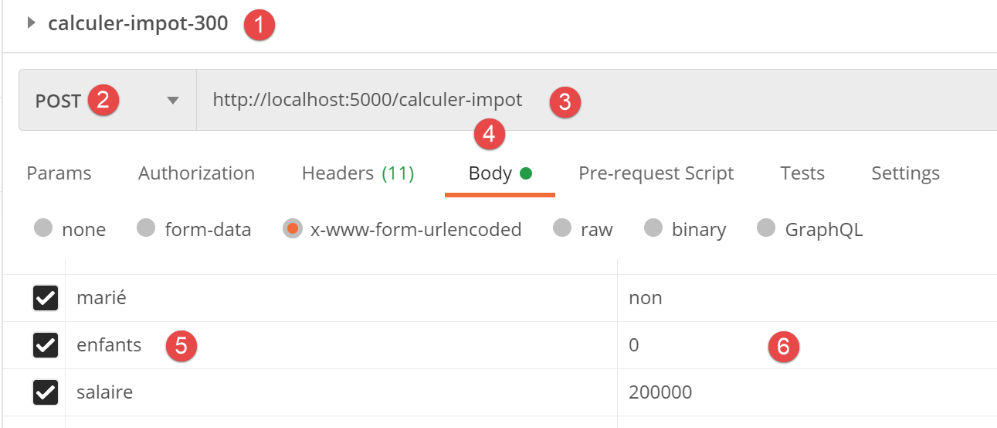

现在让我们尝试以下请求 [calculate-tax-301]：

服务器的响应如下：
现在我们来尝试一个意外的情况：POST请求中缺少参数。这种情况在应用程序的正常运行中是不可能发生的。但任何人都可以像我们现在这样“篡改”HTTP请求：
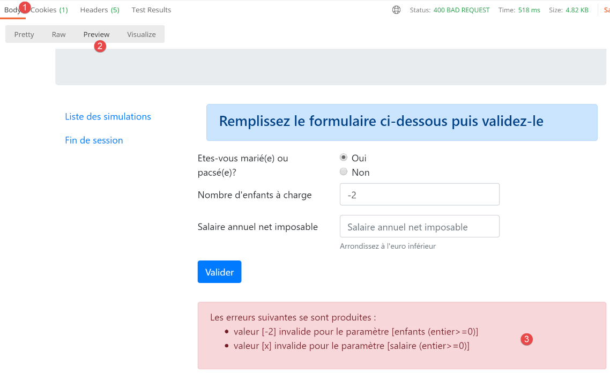

- 在 [6] 中，我们取消勾选了 POST 参数 [married]；
服务器的响应如下：

- 在 [3] 中，服务器的错误信息；
在此应用中，我们有两种选择。我们可以为该错误情况分配一个状态码，使其重定向至意外错误页面。在此应用中，我们为每个控制器选择了两个状态码：
- [xx0]：表示成功；
- [xx1]：表示失败；
对于失败情况，我们可以使用不同的状态码来实现更精细的错误处理。例如，我们可以使用：
- [xx1]: 用于在引发错误的页面上显示错误；
- [xx2]: 用于应用程序正常使用过程中出现的意外错误；
32.7. 模拟列表视图

32.7.1. 视图概述
显示模拟列表的视图如下：

由代码 [vue-liste-simulations.html] 生成的视图包含三个部分：
- 1：顶部横幅由前文已介绍的片段 [v-banner.html] 生成；
- 3：由片段 [v-simulation-list.html] 生成的模拟列表；
- 2：一个包含两个链接的菜单，由之前介绍过的片段 [v-menu.html] 生成；
模拟视图由以下代码 [vue-liste-simulations.html] 生成：
<!-- document HTML -->
<!doctype html>
<html lang="fr">
<head>
<!-- Required meta tags -->
<meta charset="utf-8">
<meta name="viewport" content="width=device-width, initial-scale=1, shrink-to-fit=no">
<!-- Bootstrap CSS -->
<link rel="stylesheet" href="https://maxcdn.bootstrapcdn.com/bootstrap/4.4.1/css/bootstrap.min.css">
<title>Application impôts</title>
</head>
<body>
<div class="container">
<!-- headband -->
{% include "fragments/v-bandeau.html" %}
<!-- two-column line -->
<div class="row">
<!-- three-column menu-->
<div class="col-md-3">
{% include "fragments/v-menu.html" %}
</div>
<!-- list of simulations on 9 columns-->
<div class="col-md-9">
{% include "fragments/v-liste-simulations.html" %}
</div>
</div>
</div>
</body>
</html>
评论
- 第16行：添加应用程序横幅 [1]；
- 第21行：添加菜单 [2]。它将以三列形式显示在横幅下方；
- 第26行：插入模拟表格 [3]。它将显示在横幅下方、菜单右侧，呈九列布局；
我们已经对该视图的三个片段中的两个进行了说明：
片段 [v-liste-simulations.html] 如下所示：
{% if modèle.simulations is undefined or modèle.simulations|length==0 %}
<!-- message on blue background -->
<div class="alert alert-primary" role="alert">
<h4>Votre liste de simulations est vide</h4>
</div>
{% endif %}
{% if modèle.simulations is defined and modèle.simulations|length!=0 %}
<!-- message on blue background -->
<div class="alert alert-primary" role="alert">
<h4>Liste de vos simulations</h4>
</div>
<!-- simulation table -->
<table class="table table-sm table-hover table-striped">
<!-- headers of the six table columns -->
<thead>
<tr>
<th scope="col">#</th>
<th scope="col">Marié</th>
<th scope="col">Nombre d'enfants</th>
<th scope="col">Salaire annuel</th>
<th scope="col">Montant impôt</th>
<th scope="col">Surcôte</th>
<th scope="col">Décôte</th>
<th scope="col">Réduction</th>
<th scope="col">Taux</th>
<th scope="col"></th>
</tr>
</thead>
<!-- table body (data displayed) -->
<tbody>
<!-- display each simulation by browsing the simulation table -->
{% for simulation in modèle.simulations %}
<!-- display a table row with 6 columns - <tr> tag -->
<!-- column 1: row header (simulation no.) - <th scope='row' tag -->
<!-- column 2: parameter value [married] - <td> tag -->
<!-- column 3: parameter value [children] - <td> tag -->
<!-- column 4: parameter value [salary] - <td> tag -->
<!-- column 5: [tax] parameter value - <td> tag -->
<!-- column 6: parameter value [surcôte] - <td> tag -->
<!-- column 7: parameter value [discount] - <td> tag -->
<!-- column 8: parameter value [reduction] - <td> tag -->
<!-- column 9: parameter value [rate] (of tax) - <td> tag -->
<!-- column 10: link to delete simulation - <td> tag -->
<tr>
<th scope="row">{{simulation.id}}</th>
<td>{{simulation.marié}}</td>
<td>{{simulation.enfants}}</td>
<td>{{simulation.salaire}}</td>
<td>{{simulation.impôt}}</td>
<td>{{simulation.surcôte}}</td>
<td>{{simulation.décôte}}</td>
<td>{{simulation.réduction}}</td>
<td>{{simulation.taux}}</td>
<td><a href="/supprimer-simulation/{{simulation.id}}">Supprimer</a></td>
</tr>
{% endfor %}
</tr>
</tbody>
</table>
{% endif %}
评论
- 使用 <table> 标签创建了一个 HTML 表格（第 15 行和第 62 行）；
- 表格的列标题在 <thead> 标签（表格头，第 17 行和第 30 行）中定义。 <tr> 标签（表格行，第 18 行和第 29 行）定义一行。第 19–28 行：<th> 标签（表格标题）定义列标题。共有十个。[scope="col"] 表示该标题适用于列。[scope="row"] 表示该标题适用于行；
- 第 32–61 行：<tbody> 标签包围了表格显示的数据；
- 第 47–58 行：<tr> 标签框定表格的一行；
- 第 48 行：<th scope=’row’> 标签定义行标题。浏览器会突出显示该标题；
- 第 49–57 行：每个 td 标签（表格数据）定义该行的一列；
- 第 34 行：模拟列表位于 [model.simulations] 模型中，该模型是一个字典列表；
- 第 57 行：用于删除模拟的链接。URL 使用了该行中显示的模拟编号；
32.7.2. 可视化测试
我们为视图 [view-simulation-list.html] 创建一个测试脚本：
脚本 [test_simulation_list_view] 如下：

注释
- 第 12–35 行：向模型中添加了两个仿真
- 第37–39行：菜单选项表；
让我们运行此脚本来显示该视图。我们将得到以下结果：

我们将继续完善此视图，直到对其外观感到满意。随后，我们可以将其集成到当前正在开发的 Web 应用程序中。
32.7.3. 计算视图模型
确定视图的外观后，我们可以继续在实际条件下计算视图模型。让我们回顾一下导致此视图显示的状态代码。这些代码可在配置文件中找到：

{
# vue de la liste des simulations
"états": [
# /lister-simulations
500,
# /supprimer-simulation
600
],
"view_name": "views/vue-liste-simulations.html",
"model_for_view": ModelForListeSimulationsView()
}
因此，正是状态码 [500, 600] 触发了模拟视图的显示。要理解这些代码的含义，我们可以参考在 JSON 应用程序上执行的 [Postman] 测试：
- [list-simulations-500]: 500 是 [list-simulations] 操作成功后的状态码：随后将显示用户执行的模拟列表；
- [delete-simulation-600]: 600 是 [delete-simulation] 操作成功后的状态码。随后将显示删除操作后生成的新的模拟列表；
既然我们已经知道何时应显示模拟列表，就可以在 [ModelForListeSimulationsView] 类中定义其模型：
注释
- 第 13 行：要显示的模拟结果位于 [result["response"]] 中；
- 第 15–17 行：要显示的菜单选项；
32.7.4. [Postman] 测试
我们
- 初始化一个 HTML 会话；
- 进行身份验证；
- 执行三项税费计算；
[lister-simulations-500] 测试使我们能够获取 500 状态码。它对应于查看模拟结果的请求：

服务器响应如下：

[delete-simulation-600] 测试返回 600 状态码。在此，我们将删除第 2 号模拟。
返回的结果是一个模拟列表，其中缺少一个模拟：


32.8. 查看意外错误
在此，我们将“意外错误”定义为在 Web 应用程序正常使用过程中不应发生的错误。例如，在未经过身份验证的情况下请求税费计算。没有任何机制能阻止用户直接在浏览器中输入 URL [/tax-calculation]。此外，正如我们所见，用户还可以向 URL [/tax-calculation] 发送 POST 请求，而无需包含预期的参数。 我们已看到，我们的 Web 应用程序知道如何正确响应此请求。我们将“意外错误”定义为 HTML 应用程序内部不应发生的错误。如果它确实发生，则很可能有人正在试图“入侵”该应用程序。 出于教学目的，我们决定在这些情况下显示一个错误页面。实际上，我们也可以重新显示之前发送给客户端的页面。要实现这一点，我们只需将上次发送的 HTML 响应存储在会话中。一旦发生意外错误，我们就返回该响应。这样，由于显示的页面没有变化，用户会觉得服务器对他们的错误没有做出响应。
32.8.1. 视图概述

显示意外错误的视图如下：
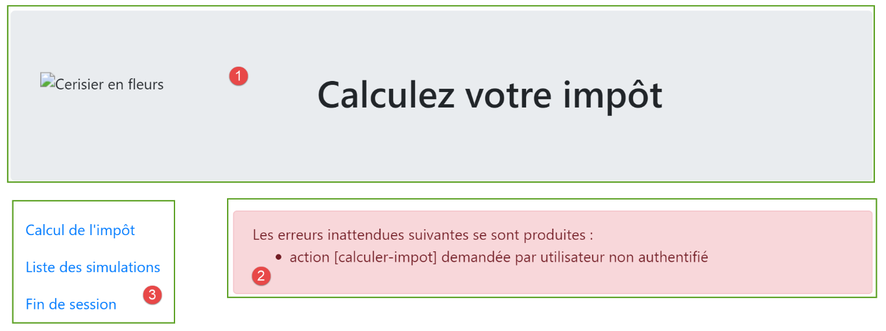
由代码 [vue-erreurs.html] 生成的视图包含三个部分：
- 1：顶部横幅由已展示的片段 [v-banner.html] 生成；
- 2：意外错误；
- 3：一个包含三个链接的菜单，由已展示的片段 [v-menu.html] 生成；
意外错误的视图由以下脚本 [error-view.html] 生成：
<!-- document HTML -->
<!doctype html>
<html lang="fr">
<head>
<!-- Required meta tags -->
<meta charset="utf-8">
<meta name="viewport" content="width=device-width, initial-scale=1, shrink-to-fit=no">
<!-- Bootstrap CSS -->
<link rel="stylesheet" href="https://maxcdn.bootstrapcdn.com/bootstrap/4.4.1/css/bootstrap.min.css">
<title>Application impôts</title>
</head>
<body>
<div class="container">
<!-- 12-column banner -->
{% include "fragments/v-bandeau.html" %}
<!-- two-section line -->
<div class="row">
<!-- 3-column menu-->
<div class="col-md-3">
{% include "fragments/v-menu.html" %}
</div>
<!-- 9-column error list -->
<div class="col-md-9">
<div class="alert alert-danger" role="alert">
Les erreurs inattendues suivantes se sont produites :
<ul>{{modèle.erreurs|safe}}</ul>
</div>
</div>
</div>
</div>
</body>
</html>
评论
- 第16行：添加应用程序横幅 [1]；
- 第 21 行：添加菜单 [3]。它将以三列形式显示在横幅下方；
- 第24–29行：将错误区域以九列布局显示；
- 第 25 行：该显示区域将位于一个粉色背景的 Bootstrap 容器中；
- 第 26 行：介绍性文本；
- 第 27 行：<ul> 标签包裹着一个项目符号列表。该项目符号列表由模板 [template.errors] 提供；
我们已经对该视图的两个片段进行了说明：
32.8.2. 视觉测试
我们为 [vue-erreurs.html] 视图编写了一个测试脚本：

注释
- 第 11–15 行：构建错误的 HTML 列表；
- 第17–20行：菜单选项数组；
让我们运行这个脚本。我们会得到以下结果：
我们不断调整此视图，直到对视觉效果满意为止。随后，我们可以将其集成到当前正在开发的 Web 应用程序中。

32.8.3. 计算视图模型

一旦确定了视图的外观，我们就可以在实际条件下计算视图模型。让我们回顾一下导致此视图的状态代码。这些代码可以在配置文件中找到：
# les vues HTML et leurs modèles dépendent de l'état rendu par le contrôleur
"views": [
{
# vue d'authentification
"états": [
# /init-session réussite
700,
# /fin-session
400,
# /authentifier-utilisateur échec
201
],
"view_name": "views/vue-authentification.html",
"model_for_view": ModelForAuthentificationView()
},
{
# vue du calcul de l'impôt
"états": [
# /authentifier-utilisateur réussite
200,
# /calculer-impot réussite
300,
# /calculer-impot échec
301,
# /afficher-calcul-impot
800
],
"view_name": "views/vue-calcul-impot.html",
"model_for_view": ModelForCalculImpotView()
},
{
# vue de la liste des simulations
"états": [
# /lister-simulations
500,
# /supprimer-simulation
600
],
"view_name": "views/vue-liste-simulations.html",
"model_for_view": ModelForListeSimulationsView()
}
],
# vue des erreurs inattendues
"view-erreurs": {
"view_name": "views/vue-erreurs.html",
"model_for_view": ModelForErreursView()
},
以下是第 3–41 行中不会导致显示 HTML 视图的状态码，这些状态码会导致显示意外错误视图。
视图模型 [view-errors.html] 由以下 [ModelForErrorsView] 类计算得出：
注释
- 第 11-14 行：计算视图 [view-errors.html] 所使用的模型 [model.errors]；
- 第 16-197 行：计算片段 [v-menu.html] 所使用的模型 [model.optionsMenu]；
32.8.4. 测试 [Postman]
我们执行：
- 执行操作 [/init-session/html]；
- 随后执行操作 [/init-session/x]；
随后生成的 HTML 响应如下：

32.9. 应用程序菜单操作的实现
在此我们将讨论菜单操作的实现。让我们回顾一下之前遇到的链接的含义
查看 | 链接 | 目标 | 角色 |
税款计算 | [模拟列表] | [/list-simulations] | 请求模拟列表 |
[会话结束] | |||
模拟列表 | [税费计算] | [/显示税费计算] | 查看税费计算 |
[结束会话] | |||
意外错误 | [税费计算] | [/显示税费计算] | 查看税费计算 |
[模拟列表] | |||
[结束会话] |
需要注意的是，点击链接会向链接的目标发起一个 GET 请求。动作 [/lister-simulations、/end-session] 是通过 GET 操作实现的，这使得我们可以将其用作链接目标。当通过 POST 请求执行该动作时，除非结合 JavaScript 使用，否则将无法通过链接进行操作。
32.9.1. [/display-tax-calculation] 操作
从上述列出的操作来看，[/display-tax-calculation] 操作似乎尚未实现。这属于两个视图之间的导航操作：JSON 或 XML 服务器没有理由实现它，因为它们不具备视图的概念。引入这一概念的是 HTML 服务器。
因此，我们需要实现 [/display-tax-calculation] 操作。这将使我们能够回顾在服务器内实现操作的流程。
首先，我们需要添加一个新的二级控制器。我们将它命名为 [AfficherCalculImpotController]：
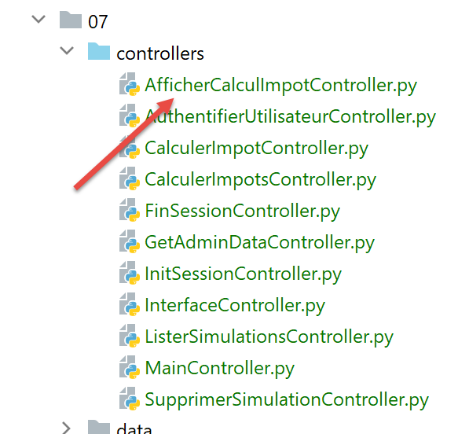
该控制器必须添加到 [config] 配置文件中：
- 第 2 行：新的控制器；
- 第 28 行：新的操作及其控制器；
- 第 51 行：新控制器将返回状态码 800。切换视图时不应出现错误。显示的视图是我们已经学习、讲解并测试过的 [vue-calcul-import.html] 视图；
[AfficherCalculImpotController] 控制器将如下所示：
评论
- 第 6 行：与其他辅助控制器一样，新控制器实现了 [InterfaceController] 接口；
- 第 13 行：视图更改的实现很简单：只需返回与目标视图关联的状态码，如上所示，这里是 800；
32.9.2. [/end-session] 操作
[/end-session] 操作具有特殊性。它不会直接跳转到视图，而是触发重定向。请注意，重定向在 [config] 文件中的配置如下：
# redirections
"redirections": [
{
"états": [
400, # /fin-session réussi
],
# redirection vers
"to": "/init-session/html",
}
],
该应用程序中仅有一个重定向：
- 当控制器返回状态码 [400]（第 5 行）时，客户端必须被重定向到 URL [http://machine:port/chemin/init-session/html]（第 8 行）；
状态码 [400] 是 [/fin-session] 操作成功后返回的代码。那么，为什么必须将客户端重定向到 URL [/init-session/html] 呢？因为 [/fin-session] 操作会从 Web 会话中移除会话类型。此时我们已无法识别当前处于 HTML 会话中，因此需要进行重定向。我们通过 [/init-session/html] 操作来实现这一点。
HTML 重定向由 [HtmlResponse] 类处理：
- 第 6–12 行处理重定向；
- 第 7 行：config['redirections'] 是一个重定向列表。每个重定向都是一个包含以下键的字典：
- [states]：导致重定向的控制器返回的状态；
- [to]：重定向的 URL；
- 第 7–12 行：遍历重定向列表；
- 第 9 行：对于每个重定向，我们获取导致该重定向的状态码；
- 第 10 行：如果检测到的状态码在此列表中，则执行重定向（见第 12 行）；
- 第 12 行：请注意，[build_http_response] 方法必须返回一个包含两个元素的元组：
- [response]：要发送的 HTTP 响应。该响应通过 [redirect] 函数构建，其参数为重定向 URL；
- [status_code]：HTTP 响应状态码，此处为 [status.HTTP_302_FOUND]，该代码指示客户端进行重定向；
让我们运行一个 [Postman] 测试。我们：
- 初始化一个 HTML 会话 [init-session/html]；
- 进行身份验证 [/authenticate-user]；
- 结束会话 [/end-session];

服务器的响应如下：

我们已经获取到了身份验证视图。这正是我们预期的结果。现在，让我们看看它是如何获取到的。切换到 [Postman] 控制台（Ctrl-Alt-C）：
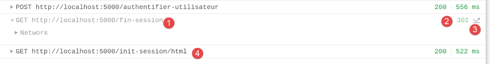
- 在 [1] 中，执行了 [/end-session] 操作；
- 在 [2-3] 中，服务器返回的 HTTP 状态码 302 告知客户端正在进行重定向；
- 在 [4] 中，客户端 [Postman] 执行了重定向；
32.10. 在真实环境中测试 HTML 应用程序
代码已编写完毕，每个操作也已通过 [Postman] 进行了测试。我们仍需在实际场景中测试视图流。我们需要一种方法来初始化 HTML 会话。我们知道需要向服务器发送 [/init-session/html] 请求。但这并不是一个很实用的 URL。我们更希望从 [/] URL 开始。
我们在主脚本 [main] 中编写了以下路由：
- 第 4–7 行：处理 [/] 路由。Web 应用程序的入口点将是 URL [/init-session/html]（第 10 行）。此外，在第 7 行，我们将客户端重定向到此 URL：
- [url_for] 函数在第 1 行被导入。此处它有两个参数（第 7 行）：
- 第一个参数是某个路由函数的名称，本例中即第 11 行中的函数。我们可以看到，该函数期望接收一个名为 [type_response] 的参数，即客户端请求的响应类型（json、xml、html）；
- 第二个参数接收第 11 行中的参数名 [type_response]，并为其赋值。如果存在其他参数，我们将对每个参数重复此过程；
- 它返回与通过两个参数指定的函数关联的 URL。在此，这将返回第 10 行中的 URL，其中参数被其值 [/init-session/html] 替换；
- [redirect] 函数在第 1 行被导入。其作用是向客户端发送一个 HTTP 重定向头部：
- 第一个参数是客户端应被重定向到的 URL；
- 第二个参数是发送给客户端的 HTTP 响应状态码。代码 [status.HTTP_302_FOUND] 对应于 HTTP 重定向；
准备就绪。现在让我们看几个视图序列。
在浏览器中，我们启用开发者工具（Chrome、Firefox、Edge 中按 F12），并请求启动 URL [http://localhost:5000/]。服务器的响应如下：
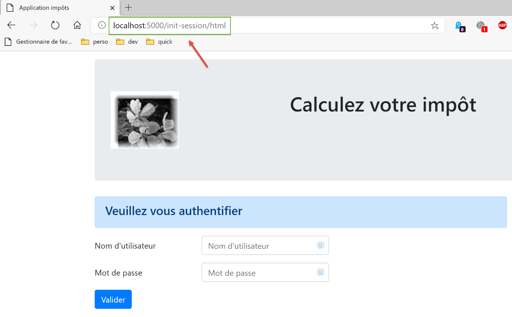
如果查看客户端与服务器之间的网络流量：

- 可以看到，在 [4, 5] 处，浏览器接收到了一条重定向请求，指向 URL [/init-session/html]；
让我们填写收到的表单；

然后我们进行几次模拟：


让我们请求模拟列表：

删除第一个模拟：

结束本次会话：

欢迎读者尝试其他测试。